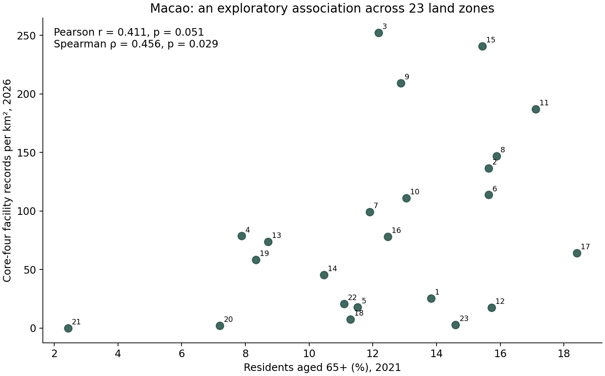
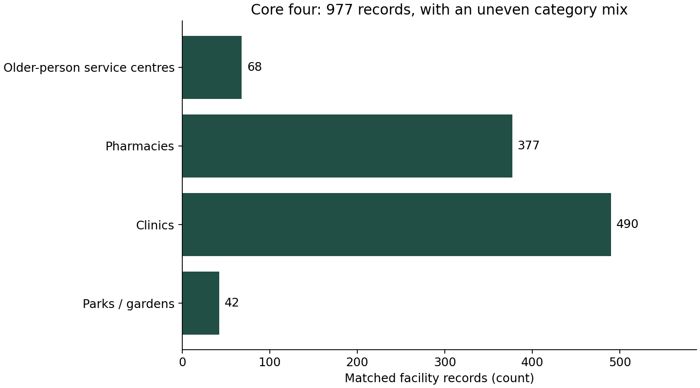
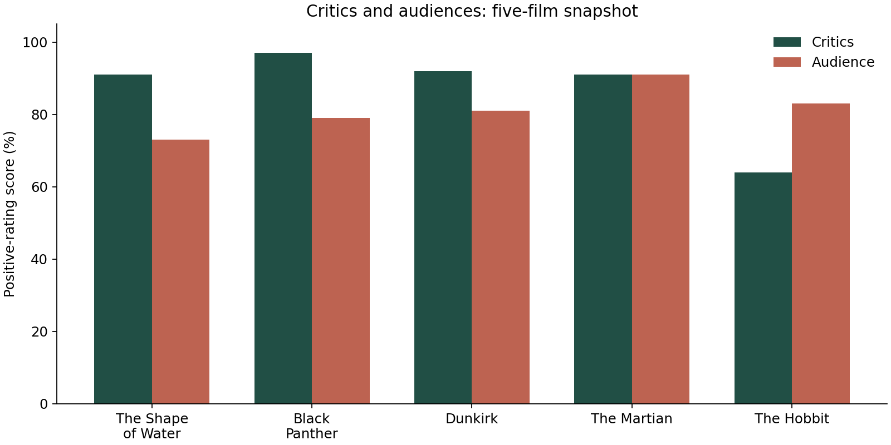
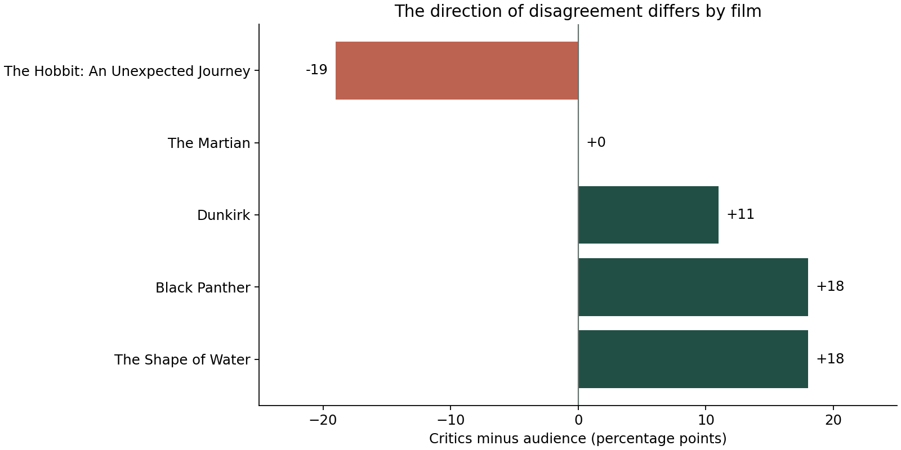
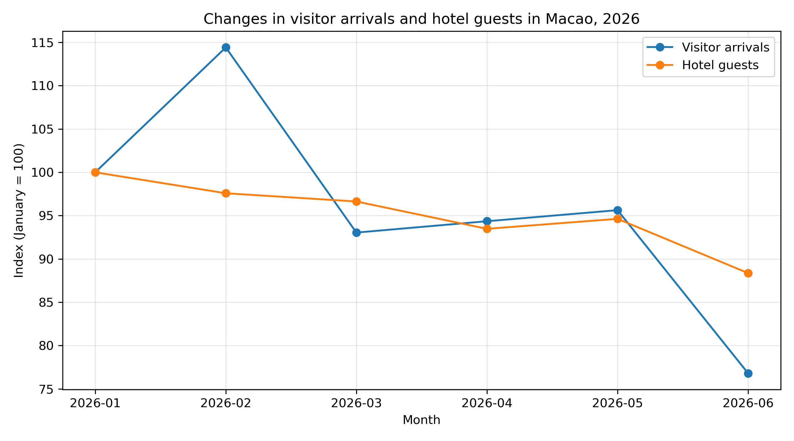

Across 23 land statistical zones, is the share of residents aged 65+ associated with the density of facilities used by older residents?
23land statistical zones
977core-four facility records
2021 / 2026population / facility snapshot

Pearson r=0.411, p=0.051; Spearman ρ=0.456, p=0.029. Positive exploratory association; the primary Pearson test does not cross α=.05.

Core four: older-person services, pharmacies, clinics, parks/gardens. Extended seven adds Chinese pharmacies, health centres and hospitals for sensitivity analysis.
What the evidence says
The linear and rank results point in the same direction but provide different strength of evidence. Facility counts are dominated by clinics and pharmacies; category composition matters when interpreting a combined measure.
What it cannot establish
2021 population and 2026 facilities do not constitute a same-year supply–demand assessment. Correlation does not establish causation, access or adequate capacity. Land area and statistical-zone boundaries affect density; associations are calculated from the zone table, not inferred from map area.
My contribution
I integrated the team's evidence into presentation slides, prepared the introductory video and English narration, and delivered the presentation. This required understanding the research framework, selecting core figures and keeping the spoken claims consistent with the analysis.
Data and statistical analysis: Ding Huiyuan. Spatial processing and mapping: Duan Qingru. Interpretation and quality review: Wang Tingyue. Coordination: Zhang Chengyi. Minutes and liaison: Miao Lingling.
Sources: DSEC 2021 census; DSCC POI service; IAM parks register. Team snapshot: 29 October 2026. Derived-table reproduction; the full spatial extraction pipeline is outside this showcase.
Course exercise · Completed
Do critics and audiences agree?
A five-film classroom snapshot comparing critic and audience scores, with a second view that makes the direction of disagreement explicit.

Three films have higher critic scores; The Hobbit has higher audience scores; The Martian is equal.

The Hobbit has the largest absolute gap: 19 percentage points. These five selected films cannot represent the film industry.
Method: pandas, NumPy and Matplotlib; grouped bars and signed differences. Limitation: small selected sample, historical scores and different reviewer populations. The original course extract does not supply a retrieval date or redistribution licence; wider reuse requires source verification.
The original coursework remains available in its existing public repository. These links distinguish the assignment materials from the ongoing six-person project.
Assignment 01 · Tourism patterns
Question: How do visitor arrivals and hotel guests relate in Macao, January–June 2026?
Original proposal figure: January=100 compares relative movements.
Six monthly pairs show Pearson r≈0.79, yet visitors rise in February and April while hotel guests fall. Six observations describe a short period; they do not establish causation.
My contribution: source organisation, data checks, coordination and the first line chart; Wang Tingyue contributed correlation analysis and interpretation. Both reviewed the work.
The revised Pair 11 proposal develops the same tourism question, with clearer visualization rationale, scope and interpretation. It is a revision of Assignment 01, not an independent data sample.

Preserved revised-proposal figure; same six-month DSEC snapshot.
Learning: compare counts, indexed change and correlation without confusing their purposes. Additional module work includes visualization notebooks and dashboard scripts.
Limitations: six months, different indicator populations and historical data revisions. Source: DSEC snapshot recorded as 20 September 2026.
Understanding the work. Explaining it responsibly.
I am Zuo Ziyi, a University of Macau student studying Data Science and Data Visualization. My team role centres on presentation and evidence integration. I am developing practical skills in Python, data exploration, visualization, GitHub documentation and reproducible workflows.
Tools: Python · pandas · NumPy · Matplotlib · Jupyter · GitHub Pages. Statistical summaries in the featured reproduction use SciPy.
Learning & next steps
Selecting a figure is also selecting a claim. Preparing the presentation helped me distinguish a visually striking pattern from a defensible conclusion, and recognise the importance of matching units, data versions and scope across team outputs.
Next: obtain classmate feedback, commit a specific improvement, strengthen provenance documentation, and expand the team's sensitivity checks.
AI declaration: OpenAI Codex assisted with this site's organisation, English editing and reproduction/plotting code. Original coursework and team contributions remain attributed. Real peer feedback is recorded separately.